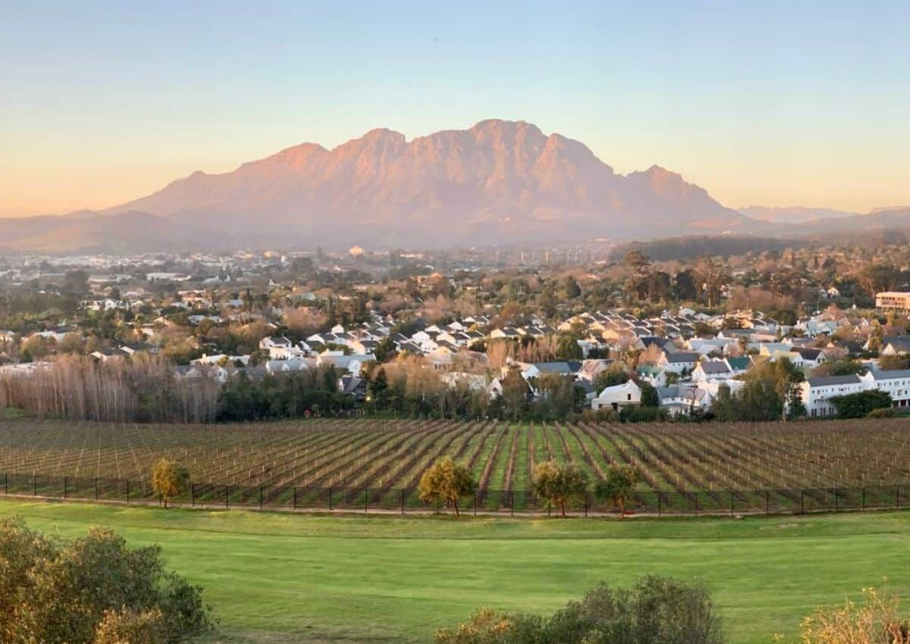

South Africa
A World in One Country
A World in One Country
South Africa truly is "A World in One Country"—a land of extraordinary diversity where world-class safari, stunning coastlines, vibrant cities, and rich cultural heritage converge. From the legendary Big Five of Kruger National Park to the iconic Table Mountain of Cape Town, from the Garden Route's dramatic cliffs to the winelands of Stellenbosch, South Africa offers an unmatched breadth of experiences. This is a destination where you can safari with lions in the morning, sip wine in a centuries-old vineyard by afternoon, and relax on pristine beaches by sunset. The country's infrastructure is excellent, with good roads, international airports, and a wide range of accommodations from luxury lodges to boutique hotels. South Africa's unique blend of African, European, Asian, and indigenous cultures—its people, cuisine, music, and art—adds depth and color to every visit. Whether you're seeking adventure, wildlife, gastronomy, or history, South Africa delivers it all in one unforgettable package.
One of Africa's largest and most accessible game reserves, with exceptional Big Five sightings, diversity of landscapes, and excellent infrastructure ranging from budget camps to ultra-luxury private lodges.
A spectacularly scenic city crowned by flat-topped Table Mountain, offering world-class restaurants, vibrant neighborhoods, historic sites, and some of Africa's most beautiful beaches.
Drive one of the world's most scenic coastal roads, passing forests, lagoons, cliffs, and charming towns like Knysna and Plettenberg Bay. Perfect for self-drive adventures and outdoor activities.
Explore Stellenbosch, Franschhoek, and Paarl—rolling vineyards, Cape Dutch architecture, and some of the world's finest wines. Perfect for wine tasting, fine dining, and scenic drives.
Experience the diversity of the Rainbow Nation
 5 Days / 4 Nights
5 Days / 4 Nights
Explore South Africa's flagship park with daily game drives in search of the Big Five. Stay at comfortable lodges or restcamps with excellent wildlife viewing in South Africa's largest reserve.
 4 Days / 3 Nights
4 Days / 3 Nights
Discover the Mother City with Table Mountain, Cape Point, Boulders Beach penguins, and the Cape of Good Hope. Includes scenic drives, vibrant markets, and world-class dining.
 7 Days / 6 Nights
7 Days / 6 Nights
Experience South Africa's most spectacular coastal drive. Explore pristine beaches, indigenous forests, lagoons, and charming towns with included accommodation, car, and curated stops.
South Africa is a year-round destination with different regions peaking at different times. The country lies in the Southern Hemisphere, so seasons are opposite to North America/Europe.
Safari Season (May-October): The dry winter months offer prime wildlife viewing across all reserves. Animals congregate around water sources, vegetation is thinner (better visibility), and malaria-free parks like Madikwe and Addo are excellent options. Daytime temperatures are pleasant (20-25°C), but nights can be chilly (5-10°C). This is peak safari season with highest rates.
Summer (November-March): Hot, rainy summer brings lush landscapes, newborn wildlife, and exceptional bird watching (including migratory species). It's excellent for Cape Town and the Garden Route's beaches. However, afternoon thundershowers are common, and eastern bush regions like Kruger can be hot and humid. Christmas/New Year is peak domestic travel—book early.
Shoulder Seasons (Apr-May & Sep-Oct): These transitional months offer the best of both worlds—pleasant weather, fewer crowds, better rates, and excellent wildlife viewing. May and September are particularly recommended. Wildflowers bloom in Namaqualand around August-September.
From savanna to sophisticated cities


Major entry points: O.R. Tambo International Airport (Johannesburg), Cape Town International, and King Shaka (Durban). Direct flights from Nairobi and many global hubs. We arrange internal flights to safari destinations.
South Africa has excellent roads, making self-drive safaris popular (left-hand drive, English-speaking). Alternatively, our guided tours provide expert drivers/guides for a more immersive experience.
Reliable airport shuttles and private transfers connect major airports to hotels and lodges. We arrange seamless transfers as part of all our packages.
We design seamless multi-destination itineraries—fly between Cape Town, Kruger, and Garden Route with domestic airlines, avoiding long drives and maximizing your time.
Most nationalities (including US, UK, EU, Canadian, Australian) receive a 90-day visa-free entry to South Africa for tourism purposes. Your passport must be valid for at least 30 days beyond your intended departure date and have at least 2 blank pages. Always check current requirements for your specific nationality, as policies can change. East African residents (Kenya, Tanzania, Uganda) also get visa-free entry for up to 90 days. We provide detailed entry requirements upon booking.
South Africa is a major tourist destination with millions of visitors annually. While crime exists, tourists are rarely targeted if they follow basic precautions. Major tourist areas (safari parks, Cape Town's tourist zones, Garden Route towns) are safe with visible security. We work exclusively with reputable operators and lodges. We recommend: avoid walking alone at night in unfamiliar areas, keep valuables secure, use registered taxis/ride apps, and be aware of surroundings. Our guides ensure your safety throughout. Many areas (like malaria-free Madikwe or private reserves) offer additional peace of mind.
South Africa offers diverse safari experiences: - **Kruger National Park**: Largest park, self-drive friendly, excellent infrastructure, high wildlife density. - **Private Game Reserves** (Sabi Sands, Timbavati, Madikwe): Exclusive lodges, off-road driving, luxury accommodations, higher chance of leopards. - **Addo Elephant Park**: Excellent elephant viewing, malaria-free. - **Kgalagadi Transfrontier Park**: Desert wildlife, lions, meerkats, remote wilderness. For first-timers, Kruger plus a private reserve attached to it (like Sabi Sands) offers the best balance of accessibility and exclusivity.
Malaria risk exists in northeastern South Africa (Kruger, Mapungubwe, northern parts of KwaZulu-Natal) during the summer rainy season (October-May). If visiting these areas in summer, consult your doctor about antimalarial medication. The Cape region, Garden Route, and Western Cape are malaria-free year-round. Many private reserves have malaria control programs. We'll advise based on your specific itinerary.
A comprehensive first visit requires 12-14 days to cover highlights. Suggested breakdown: 3-4 days Cape Town + Winelands, 3-4 days Garden Route, 3-4 days safari (Kruger or a private reserve). For a more relaxed pace or adding extra destinations (like the Drakensberg, Kalahari, or a beach extension), plan 18-21 days. Minimum recommended is 8-10 days to avoid rushing. South Africa's good infrastructure allows for a varied, well-paced itinerary in 2 weeks.
Experience the Rainbow Nation—the world in one country.